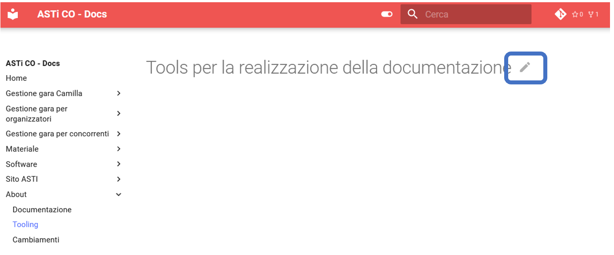
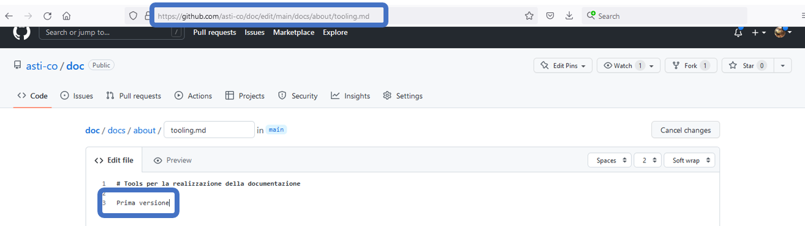
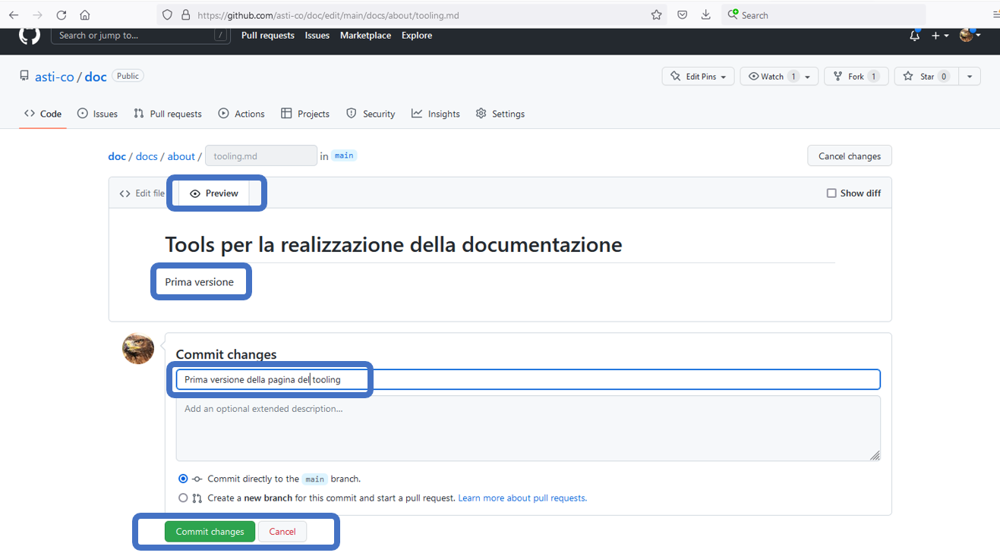
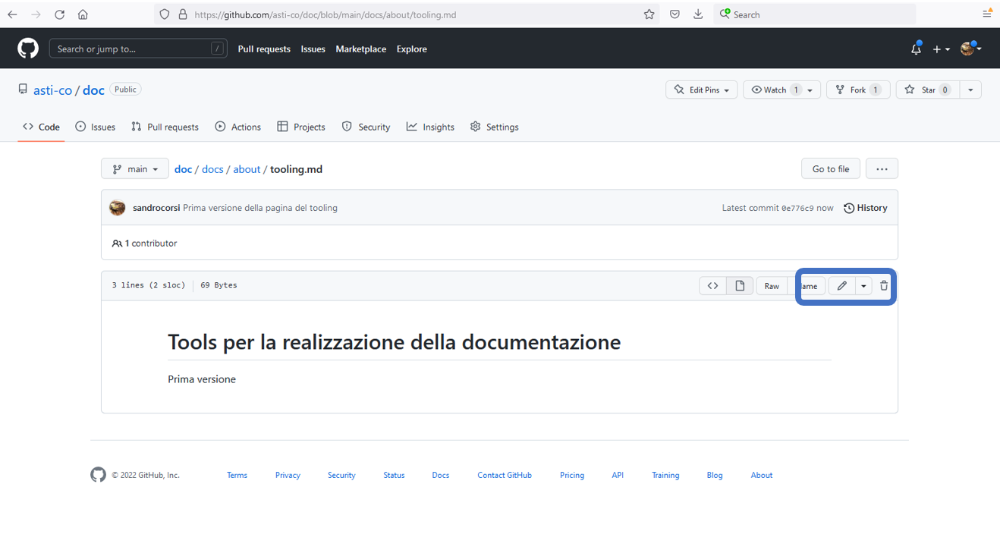
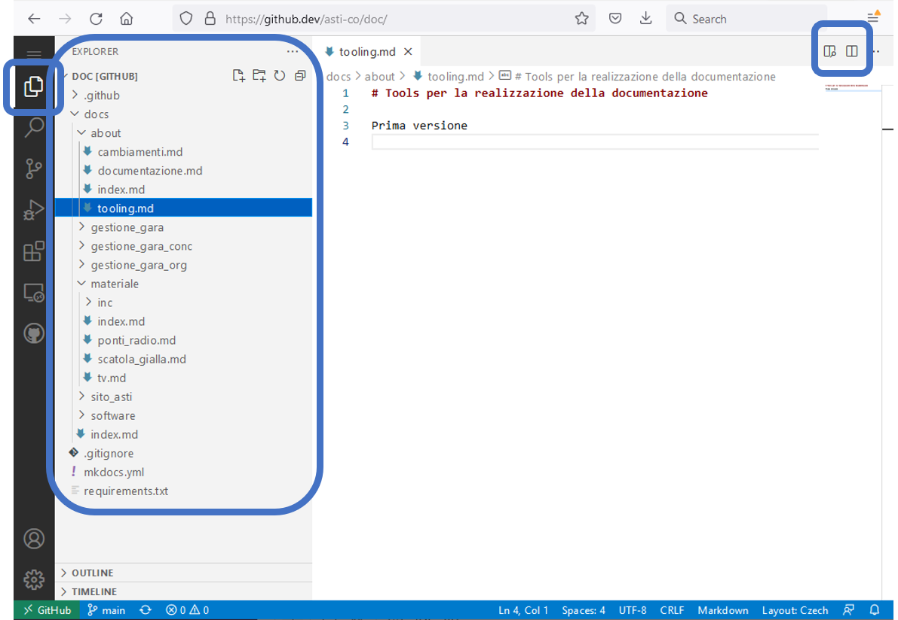
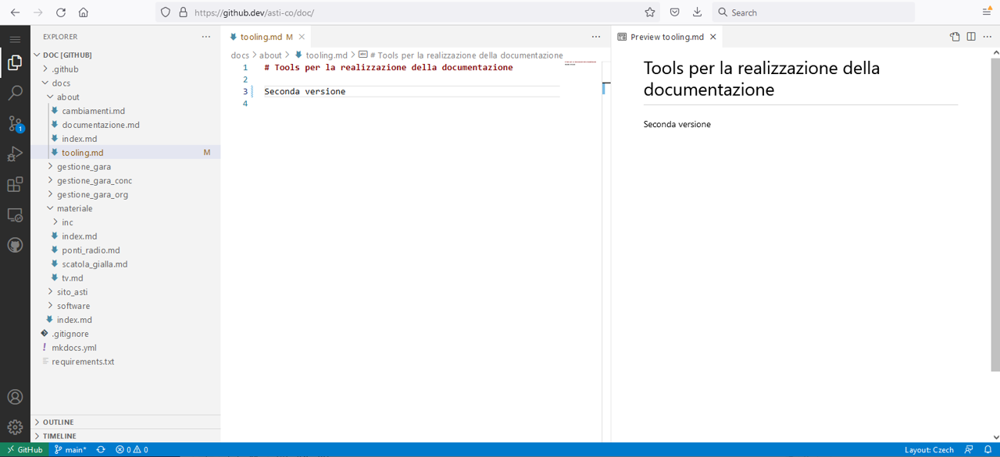
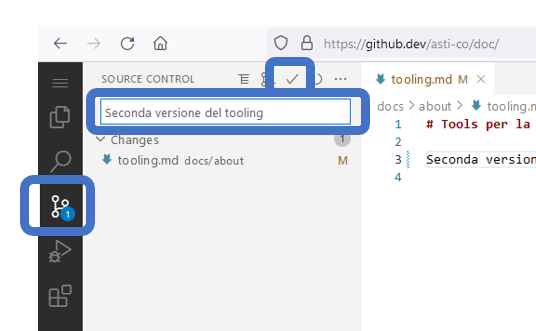
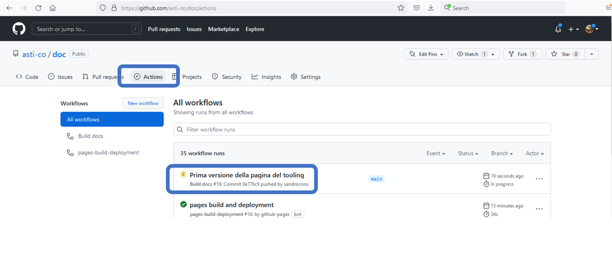
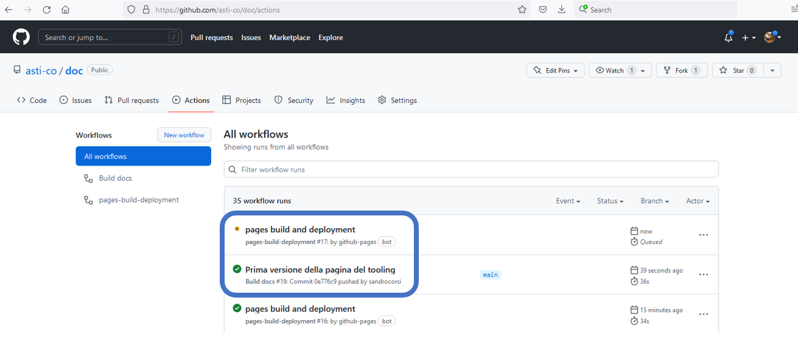

Tools per la realizzazione della documentazione¶
Editor di github¶
L'impostazione predefinita di github mostra l'icona della penna in ogni pagina, per aprire in maniera facile l'editor online.

L'URL per editare la pagina tooling nella sezione about è https://github.com/asti-co/doc/edit/main/about/tooling.md. Notare che l'URL è .com.
La pagina permette di modificare il contenuto inserendo codice markdown. 
Selezionando il tab Preview è possibile vedere la pagina con il contenuto trasformato nel formato finale, come sarà poi visibile agli utenti.
Su questa pagina è possibile indicare un commento che descrive le modifiche fatte e pubblicare la pagina cliccando sul tasto Commit changes

Una volta pubblicata, la pagina viene mostrata in formato read-only di github, con l'icona della matita per riaprire l'editor.

Le pagine modificate non saranno immediatamente visibili in quanto vanno dapprima trasformate. Vedi la sezione in basso per controllare il processo di pubblicazione.
Editor Visual Studio Code¶
Cambiando l'URL di github da .com a .dev abilita l'utilizzo online dell'editor MicroSoft Visual Studio Code (https://github.dev/asti-co/doc/).
Non tutte le opzioni nella colonna di sinistra sono attivi nella versione online, ma quelle utili lo sono!
La prima in alto mostra la lista delle cartelle e dei file, permettendo la navigazione tra le pagine e l'apertura di uno a più file in editor in tab separati.
Le due icone in alto a destra permettono di visualizzare l'anteprima della pagina, rispettivamente aprire una seconda finestra di editing.

L'editor mostra il codice markdown, con le parole chiave, titoli, link, ecc. rappresentati in colori e font diversi.

La terza opzione nella colonna di sinistra permette la pubblicazione del codice. L'icona mostra il numero di file modificati, mentre la seconda colonna mostra i file modificati.
Sopra la lista di file modificati è possibile indicare un commento che descrive le modifiche fatte e pubblicare la pagina cliccando sull'icona del visto in alto.

Le pagine modificate non saranno immediatamente visibili in quanto vanno dapprima trasformate. Vedi la sezione in basso per controllare il processo di pubblicazione.
Controllo del processo di pubblicazione¶
Selezionando la scheda Actions permette di controllare i processi di compilazione delle pagine.

Il processo è completamente automatico ed è suddiviso in due fasi.

Le nuove pagine saranno pronte e visibili a tutti quando entrambe le fasi mostreranno lo stato completato, simboleggiato da un visto verde.
In caso di errori, l'icone diventa un punto rosso. Cliccando sull'azione relativa permette di accedere ai log e ai messaggi di errore, utili per capirne la causa.
Sviluppo in locale¶
Creare la documentazione localmente sul proprio PC permette modifiche più ampie con un controllo preciso del risultato finale prima della sua pubblicazione.
I tool richiesti sono:
gitper la gestione delle versioni dei filevscodeo altro editor di testopythonper la trasformazione dei file
git¶
Git è un programma per la gestione di file condivisi che permette la collaborazione di varie persone nella creazione e nell'aggiornamento dei file, mantenendo tutte le modifiche come versioni dei file.
- Installa
gitscaricandolo dal sito ufficiale git-scm.com/downloads
Nota: per Windows scegliStandalone installer -
Configura
git-
Apri il file
.gitconfignella cartella utente con un editor di testo.
Nota: il file è nascosto, per cui abilita la visione dei file nascosti.
Nota: se il file non esiste, crealo. -
Imposta il nome e indirizzo email
Contenuto file
-
-
Apri un terminale con il comando
cmd.exedi Windows -
Verifica che la configurazione sia corretta
Output
Comando -
Crea una cartella per la documentazione ASTI
- Spostati nella cartella appena creata
- Copia tutta la documentazione in locale.
A questo punto hai tutta la documentazione sul tuo PC. Puoi editare i file .md con qualsiasi editor di testo (notepad, notepad++, ultraedit, VSCode ecc. ma NON programmi come Word).
I file sono nelle cartelle sotto C:\DocAsti\doc\docs
Usa i seguenti comandi per gestire i file da command line
-
Prima di cominciare a lavorare, aggiorna i file sul PC prendendo l'ultima versione disponibile sul server
- Apri un terminale con il comando
cmd.exedi Windows - Spostati nella cartella della documentazione
- Aggiorna i file locali prendendo l'ultima versione dal server
- Apri un terminale con il comando
-
Dopo aver modificati dei file, pubblicali sul server
- Apri un terminale con il comando
cmd.exedi Windows - Spostati nella cartella della documentazione
- Identifica tutti i file modificati
Nota: occhio alpuntofinale... è necessario! - Aggiungi un commento che descrive le modifiche fatte (corto, max 50 caratteri)
- Manda le modifiche al server
- Aggiorna i file locali prendendo l'ultima versione dal server
- Apri un terminale con il comando
VSCode¶
Puoi usare qualsiasi editor di testo.
L'editor VSCode è disponibile gratuitamente su Windows, Linux e MacOS ed ha tanti plugin a disposizione, tra cui anche quelli per la gestione integrata di git e delle pagine markdown.
- Scarica VSCode
- Di regola è consigliato lanciare VSCode con
code ., configurazione di default su Windows e Linux.
Per MacOS, seguire queste istruzioni - In VSCode apri la cartella della documentazione ASTI (in
File > Open Folder...), secondo l'esempioC:\DocAsti\doc
Nota: se è attivo il plugin di git sarà possibile eseguire i comandi descritti sopra direttamente dal tool. - Utilizza
VSCodein locale come quello online (vedi la descrizione sopra)
Crea localmente¶
Per la generazione delle pagine su Linux/MacOS
- Apri un terminale con il comando
cmd.exedi Windows - Spostati nella cartella della documentazione
- Inizialmente (solo una volta) inizializza il sistema
-
In seguito, usa unicamente questo comando
- Controlla l'output per vedere se ci sono errori.
Ad esempio, il tool mostra i link a pagine non esistenti. - Finiti i controlli viene mostrato il messaggio seguente
- Controlla l'output per vedere se ci sono errori.
-
Apri l'indirizzo indicato
http://127.0.0.1:8000/in un browser internet (Firefox, Chrome, ecc.)
Nota: il sistema si accorge autonomamente del cambiamento del contenuto delle pagine e ogni volta che salvi un file questo viene compilato e la pagina è aggiornata nel browser.
Per la generazione delle pagine in Windows
La seguente descrizione usa comandi python da lanciare in un terminale di Windows.
- Installa Python3 da https://www.python.org/downloads/
- Apri un terminale con il comando
cmd.exedi Windows - Spostati nella cartella della documentazione
-
Inizialmente (solo una volta) inizializza il sistema
- Crea l'ambiente
- Inizializza il sistema
- Installa le librerie
- Installa/aggiorna altri requisiti
-
In seguito, usa unicamente questi comandi
- Inizializza il sistema
- Lancia il server
-
Controlla l'output per vedere se ci sono errori.
Ad esempio, il tool mostra i link a pagine non esistenti.Nota: Se questo comando lancia delle eccezioni (lunghi messaggi d'errore) devi utilizzare la procedure con il Windows Subsystem for Linux.
-
Finiti i controlli viene mostrato il messaggio seguente
- Inizializza il sistema
-
Apri l'indirizzo indicato
http://127.0.0.1:8000/in un browser internet (Firefox, Chrome, ecc.)
Nota: il sistema si accorge autonomamente del cambiamento del contenuto delle pagine e ogni volta che salvi un file questo viene compilato e la pagina è aggiornata nel browser.
Per la generazione delle pagine in Windows col Subsystem for Linux
Questa soluzione utilizza il Windows Subsystem for Linux per eseguire alcuni comandi in Windows ed alcuni in Linux.
-
Installa e configura WSL (solo una volta)
- Apri un terminale con il comando
cmd.exedi Windows - Installa il Windows Subsystem for Linux (WSL) con Ubuntu (vedi la documentazione Microsoft)
- Apri il terminale di WSL con il comando
wsl.exe -
Inizializza il sistema
-
Vai nella cartella della documentazione ASTI
Nota: il discoC:è accessibile in WSL come cartella/mnt/c -
Crea l'ambiente e lancia il server
- Apri un terminale con il comando
-
In seguito, usa unicamente questi comandi
- Apri il terminale di WSL con il comando
wsl.exe -
Vai nella cartella della documentazione ASTI
Nota: il discoC:è accessibile in WSL come cartella/mnt/c -
Lancia il server
-
Controlla l'output per vedere se ci sono errori.
Ad esempio, il tool mostra i link a pagine non esistenti. -
Finiti i controlli viene mostrato il messaggio seguente
-
- Apri il terminale di WSL con il comando
-
Apri l'indirizzo indicato
http://127.0.0.1:8000/in un browser internet (Firefox, Chrome, ecc.)
Nota: il sistema si accorge autonomamente del cambiamento del contenuto delle pagine e ogni volta che salvi un file questo viene compilato e la pagina è aggiornata nel browser.